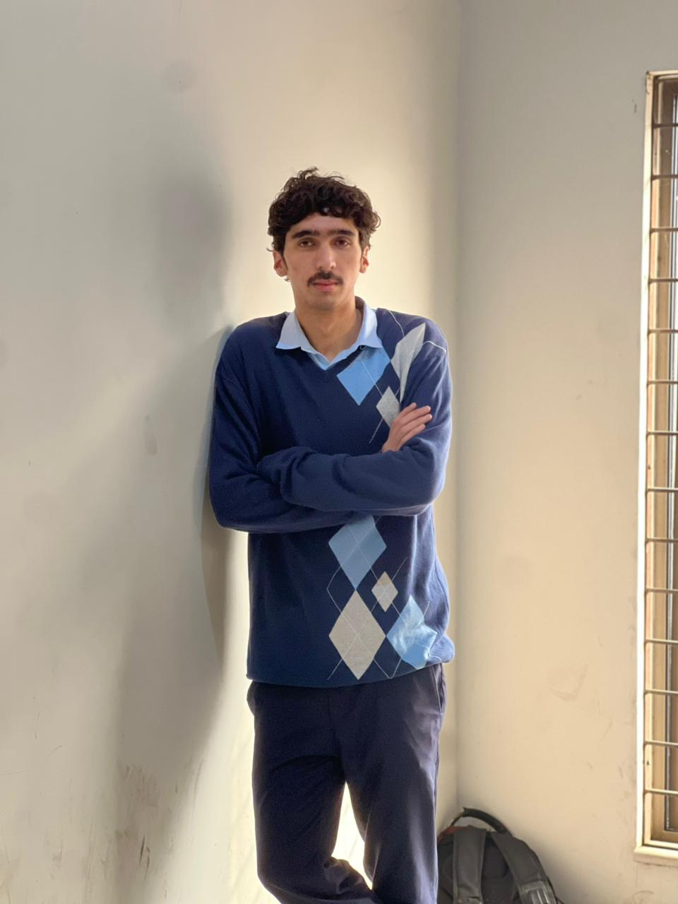

01Featured
Developer analytics
GitPulse
A repository-health dashboard that turns GitHub activity into clear, useful engineering signals.
- Repository metrics
- Health scoring
- Visual dashboard
Open to development opportunities
I’m Muhammad Musa Sarfraz, a Python developer focused on backend systems, AI integrations, and practical automation.

From developer analytics to business operations and accessible communication, each project started with something practical that needed solving.
Developer analytics
A repository-health dashboard that turns GitHub activity into clear, useful engineering signals.
Multimodal AI · Nutrition
A Flask application that analyzes food photos and returns identified items, portion estimates, calories, nutrients, and a health evaluation using IBM watsonx vision.
RAG · Video intelligence
A Gradio app that extracts YouTube transcripts, summarizes videos, and answers follow-up questions using retrieval over the transcript.
Vision · Recommendations
An image-based fashion assistant that finds visually similar products with ResNet50 embeddings and generates style analysis using IBM watsonx vision.
Accessibility · AI
A web-based system exploring real-time communication support through sign-language recognition and translation.
Business software
A desktop application for stock, customers, sales, returns, reporting, and PostgreSQL-backed business records.
API · Workflow
A service workflow combining WhatsApp Cloud API, n8n, FastAPI, authentication, and structured data handling.
I care more about what I can build reliably than collecting a long list of technologies.
Pak Logics
Supported project coordination, communication, software testing, and delivery workflows.
Nexus AI Digital
Worked on data cleaning, exploratory analysis, and regression and classification models.
Deepoxy Logics
Contributed to Python backend development, REST API testing, debugging, and feature validation.
Ace Services and iB12
Managed customer conversations and strengthened client communication and problem-solving skills.
University of Agriculture Faisalabad
I’m also the author of All This Grief, a poetry collection about becoming, loss, distance, and reckoning.
Have a role, project, or useful problem?
Faisalabad, Pakistan · Open to remote opportunities